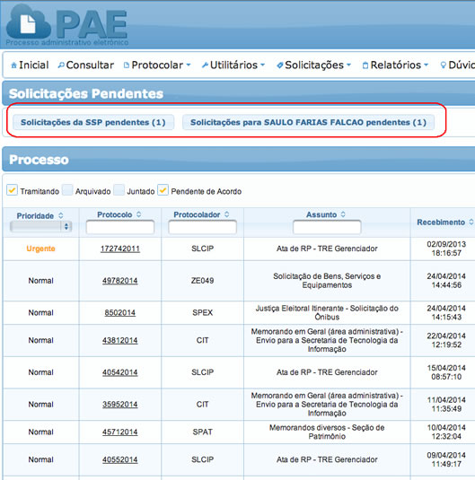

O novo PAE apresenta diversas melhorias em relação à versão anterior. Destacamos algumas. Uma delas não será possível mostrar aqui, mas você deve perceber assim que começar a utilizá-lo. É a velocidade muito maior na execução das diversas operações, tais como abertura das páginas dos processos e geração do processo completo.
A Caixa de entrada possui uma apresentação parecida com o PAE anterior, mas com algumas novidades. Destacamos aqui as principais.
Para abrir o processo você deve clicar na Lupa:
Para gerar o processo completo, você não precisa mais abrir o processo. Basta clicar nesse ícone, do "caderninho":
Você pode ordenar a lista de processos pelas colunas. Basta clicar em uma das colunas e os processos vão ser ordenados por aquele campo:
Você pode também filtrar a sua lista de processos nesse campo na parte superior. Basta digitar uma parte do texto que deseja filtrar e os processos correspondentes serão mostrados:

Caso você queira gerar um ato administrativo para vários processos de uma só vez, agora você pode, com a opção "Processar em Lote“. Você pode selecionar vários processos e clicar no botão "Processar em Lote“. A partir daí, clicando em "Avançar", você pode seguir o fluxo do programa, e, adicionando seu certificado, gerar vários atos administrativos de uma só vez.
Você pode também gerar um relatório com a lista de processos exibida para você. Basta clicar nesses ícones:
As solicitações pendentes para você e para sua seção aparecem em destaque na sua página inicial.

A opção protocolar, agora só tem uma opção e o fluxo das informações está todo em uma mesma página
Para o esclarecimento das demais dúvidas, favor entrar em contato com a SAR (Seção de Atendimento Remoto), no ramal 5555.